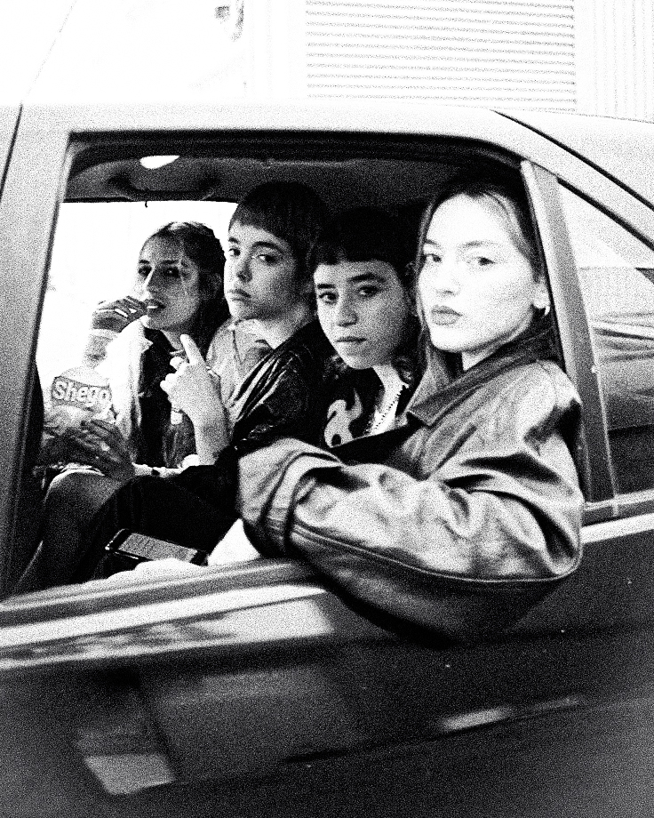
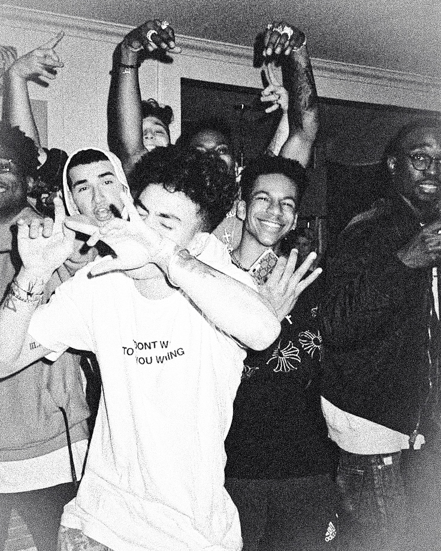
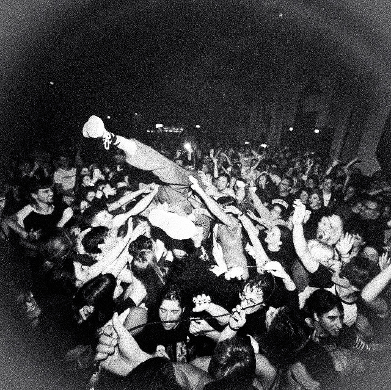

Testimonios
Influencers:
"Trabajar con Dan Haz fue increíble. Captó mi esencia sin poses forzadas y cada foto tiene esa vibra única que hace que tu feed destaque de verdad. ¡Mis seguidores no paran de preguntar quién hizo las fotos!" —Sofía M.
Egresados:
"Queríamos fotos que no se sintieran típicas de graduación, y lo logramos. Cada imagen refleja nuestra personalidad y la energía del grupo, con un estilo que mezcla rebeldía y diversión. ¡Un recuerdo que vamos a atesorar siempre! —Martin R.
Shows en vivo:
En el concierto, Dan Haz capturó la intensidad de cada momento: luces, movimiento y emociones crudas. Las fotos transmiten toda la fuerza del show, como si pudiéramos revivirlo cada vez que las miramos. —Camila F.